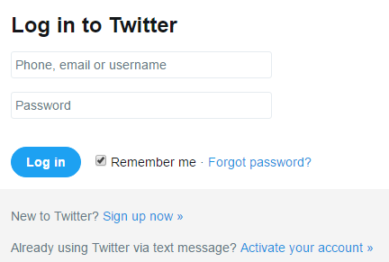
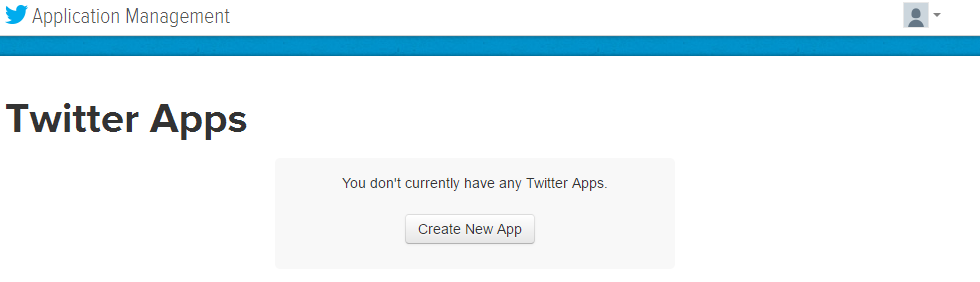
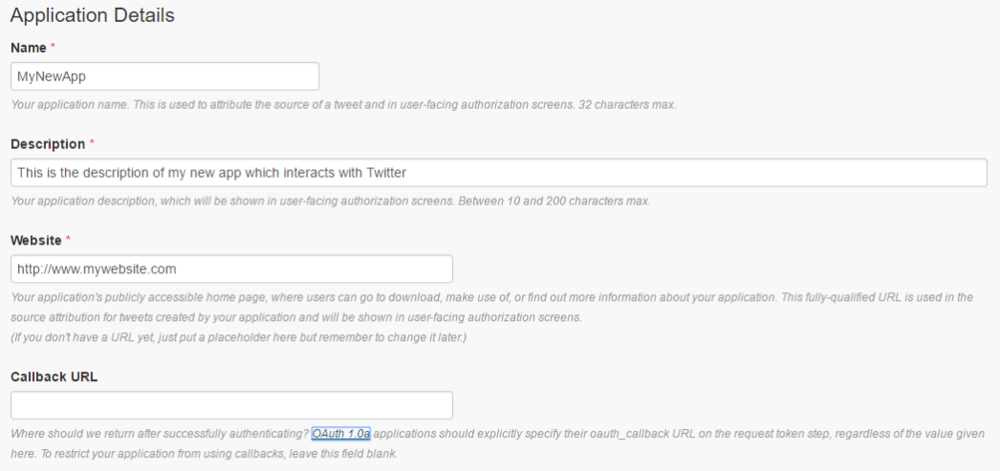
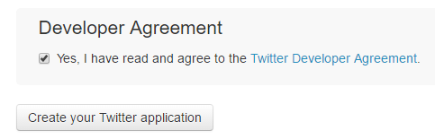
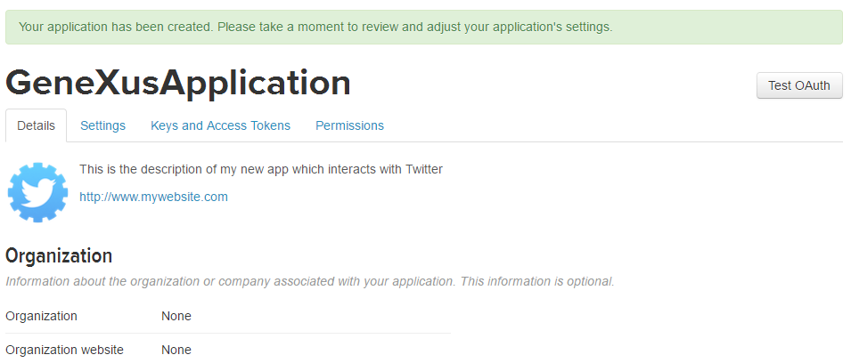
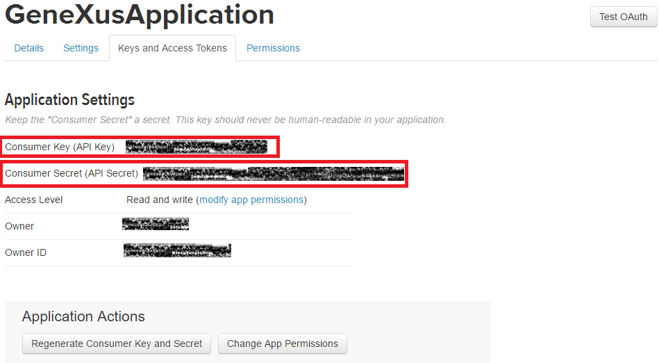

This guideline will help you to associate your GeneXus application with Twitter by the Consumer Key and Consumer Secret certificates. Step 1 - Sign in as developerGo to Twitter Developer website and signing. If you do not have an account, create it first.  Step 2 - Create a new appLook for the "Create New App" button and click it.  Then, give your application details  Finally, confirm the agreements and click on "Create your Twitter application" button. . Twitter should confirm that your application was successfully created.  Step 3 - Get the Consumer Key and Secret codesGo to "Key and Access Tokens" tab, and you'll find the Consumer Key and Consumer Secret codes. 
|
| Backlinks | |
| Native Mobile Main object properties | Twitter external object |